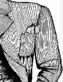

小盒子，大爸爸
●〔美〕贝迪兹·罗斯诺
每年父亲节，学校都组织孩子们动手给爸爸做一件礼物。今年，儿子的老师让每个学生都准备一只小盒子，里面要装上能代表爸爸的东西。第二天，他们要在课堂上装饰这个盒子。
这个主意挺新鲜，但我和儿子犯难了，什么东西能代表他爸爸呢？丈夫常用的工具太多太大了。我们也不能把他的书房塞进小盒子里。他最喜欢吃的东西是鸭肉和羊肉，但装在盒子里，过不了几天，腐肉味就会熏死人。
我们最后选中了一个黄色的网球和一只榔头。因为丈夫爱打网球，平时也爱做木工活——儿子的小树屋就是他爸爸亲手造的。对了，还有一张棒球明星卡片，因为丈夫是儿子所在棒球队的志愿教练。
然而这个盒子始终显得轻飘飘的，不是因为它太小，装的东西太少，而是因为我们知道，无论多大的盒子，和太多需要装进去的东西相比永远都太小。盒子装不了温暖的拥抱和慈爱的亲吻；装不了那些为了看儿子学校剧团演出而耽误的商务会议；装不了那些精彩的睡前故事；装不了无数个教儿子游泳的周末；也装不了那些打雪仗的下午。
其实盒子里装不了的那些东西才真正代表了父亲，代表了一个父亲对儿子的爱。
(蔡哲摘自《少男少女》2006年10月B刊，庞彦图)